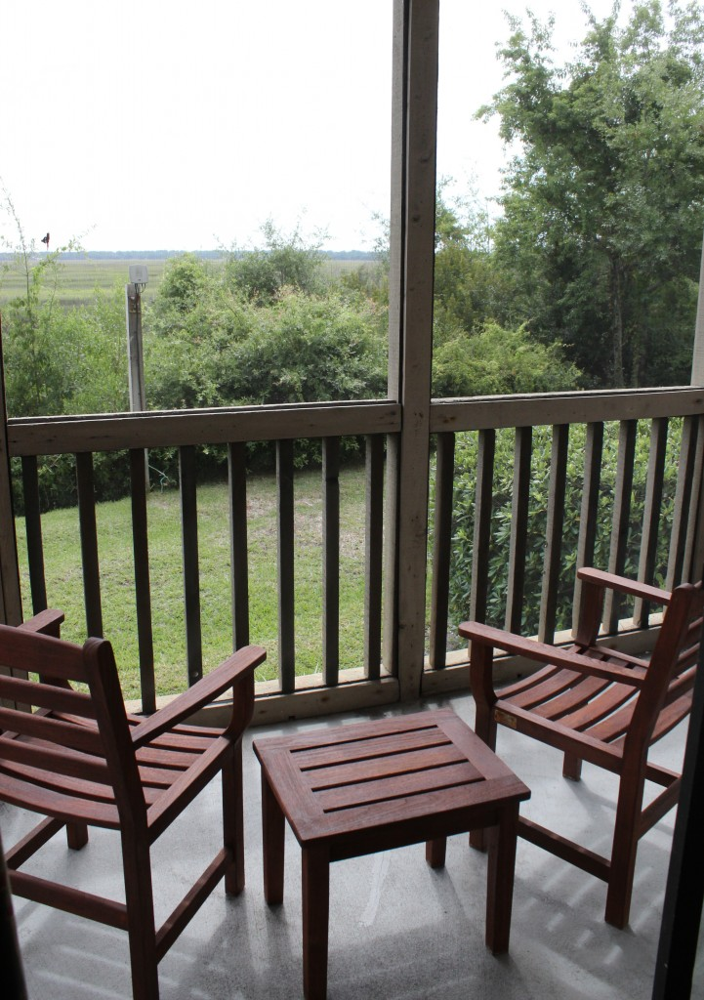
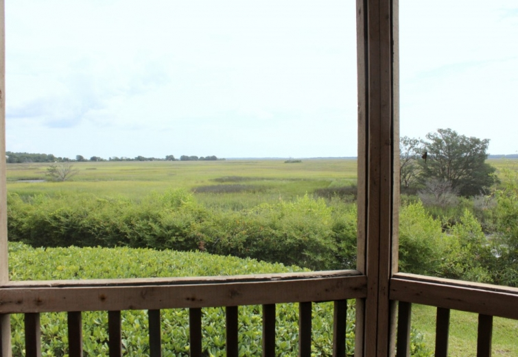

.png)
.PNG)
.PNG)
.PNG)
.PNG)
.PNG)
.JPG)
.JPG)
.PNG)
.PNG)


 About a month ago, my husband had a conference to attend on St. Simons Island, and our family decided to tag along. Our accommodations were in a run of the mill conference hotel, so I won’t bore you with photos of that, but we were lucky enough to get one of the rooms with a nice little screened porch.
About a month ago, my husband had a conference to attend on St. Simons Island, and our family decided to tag along. Our accommodations were in a run of the mill conference hotel, so I won’t bore you with photos of that, but we were lucky enough to get one of the rooms with a nice little screened porch.
It seemed quite private and had a great view of the marsh.
In case you don’t know, St. Simons Island is one of Georgia’s Golden Isles. (Sea Island, Jekyll Island, Cumberland Island and Little St. Simon’s Island are some of the others.) Besides all the marshes, St. Simons is covered with beautiful old forests, so riding around the island always provides gorgeous scenery. The first evening we were there, I wanted to take photographs of some of the interesting places on the island, and we headed out to The Stables at Frederica.
You pass the stables before you get to the actual entrance. It was almost sunset,and the entry into the area was quiet and very peaceful.
This area is part of a planned golf community, and the real estate sales office is located adjacent to the equestrian center. I have always thought the sales building with its tin roof was charming.
After enjoying the stables, we drove further out …
to here – one of my favorite places on St. Simons…
When I was a teenager, I fell in love with a trilogy of books by Eugenia Price. They were historical novels and included love stories set in the South – specifically St. Simons Island. The characters in her books had once lived on the island, and when my parents took our family on vacation there, I of course, wanted to find all the locations mentioned in the books. 🙂 One of the most memorable settings was Christ Church Frederica. Isn’t it beautiful?
A little history of Christ Church for you – In 1808 the state of Georgia deeded 100 acres on St. Simons to be used for this church,and it was finished in 1820. It was almost destroyed during the Civil War when the Union Troops used it for their horses. (Yes, their horses.) But in 1889 it was restored to its former beauty. The grounds around the chapel are beyond beautiful with their ancient trees dripping with Spanish moss.
There is a very large cemetery surrounding the back of the church, and in that cemetery is buried some of the Gould family – characters from the Eugenia Price novels. We wandered through the tombstones looking for the names. It had been a long time since I had visited Christ Church, so I could not remember where the Goulds were buried. Luckily, my oldest son found them for me.
I hope you will visit Christ Church if you are ever on the island. I have been there when busloads of people visit, but on this evening we were the only ones enjoying the church grounds.
If I remember correctly, in one of the novels, the rector’s wife is buried in a very unusual location. I won’t spoil it by telling you where that might be. You will just have to read the books to find out. 🙂 Here are the three books in her St. Simons Island trilogy. (These are Amazon affiliate links.)
Lighthouse: First Novel in the St. Simons Trilogy
New Moon Rising: Second Novel in The St. Simons Trilogy
The Beloved Invader (St. Simons Trilogy)
Another interesting place to see on the island is the downtown district with all its cute shops…but I am saving all the shops for another post. I do want to show you a few things from this area in today’s post though. They have done a wonderful job preserving the old trees even in the Village (as this area is commonly called.)
The parking lots are bordered by flowerbeds.
You will find a pier at the end of the main street that runs through the Village.
A cruise ship came by as we were standing out on the pier that evening. (And it was extremely blustery making the water very choppy!)
If you look back toward the island from the pier, you have a view of the St. Simon’s lighthouse.
Between the pier and the lighthouse is this wonderful park.
What a lovely place to bring your children to play, or a place for you to simply sit on one of the many benches and enjoy the view.
After strolling through the park, we walked a block over from it and found this mailbox….
which was in front of this building – Beachview House.
I don’t know if you remember, but I wrote a post about this house in Seaside a little over a year ago.
and right before it, I wrote a post about this house in North Carolina.
Well those two houses in the old posts and Beachview House are all owned by the same couple. (Quite a collection, huh?!) I had remembered reading that they had a very old home on the island near the park, so it wasn’t difficult to locate it. Beachview House has a very interesting history. Built on nearby Cumberland Island in 1892 – not as one home, but as three separate cottages, it was assembled into one home in 1923 after all three cottages were “floated” across the Atlantic Ocean over to St. Simons. Isn’t that amazing? 🙂
Just like the cottage in Seaside and the big house in North Carolina, this one is also available for rent. You can find all the information here. It is an old house outfitted with vintage furniture and modern amenities for comfort.
Here is a photograph of the dining room.beachviewhouse.com
About a block and a half away from Beachview House, you can find the St. Simons Island lighthouse and museum. We didn’t go to the top of it on this trip, but I have climbed those 129 steps several times before. If you are interested, you can read the history of the lighthouse here.
One last stop on our sightseeing trip of the island…
Not far down the road from the lighthouse is the Maritime Center at the historic Coast Guard Station. I believe your ticket for the lighthouse includes admission to the Maritime Center, too. The museum itself is not very large, but I think the restored building alone is beautiful to see – even if only from the outside. You can read more about the Coast Guard Station here.
And that is all the time we have for sightseeing on St. Simons Island today. I think I’ll share a few houses with you in our next post, and save the shopping for another one. Hope that is okay with you. But guess what….I have a giveaway for you! While I was at the beach, I read a new book by Barbara Hinske…Weaving the Strands.
I loved loved it! It was even better than her first novel, Coming to Rosemont. But good grief, she left me hanging! I felt good about her main character Maggie at the end of the story, but I am dying to know what Loretta does. (So Barbara, you better be working right now on that third book girl!) Okay, so where was I? Oh yes, a giveaway! Barbara has graciously sent me a copy of Coming to Rosemont and Weaving the Strands, and both are autographed. So I am giving away both books, and I am throwing in a $25 gift card to Amazon. Perhaps you would like to buy a couple of the Eugenia Price books about St. Simons Island with it (but you are welcome to purchase whatever you would like with it. 🙂 )
The giveaway is open to U.S. residents only until Thursday, August 14, 2014 at midnight Eastern Time. The winner will be announced/notified on Sunday, August 17, 2014. And how do you enter? Just leave a comment on any of the St. Simons Island posts that publish between 8/7/14 and 8/14/14. You may enter on any or all of the posts, but you may only enter once per post please. Good luck!
Until next time…


.PNG)
I love St. Simons Island and remember reading all of Eugenia Price books as a little girl.Very enjoyable.
Enjoyed seeing all the beauty in St. Simons. You capture it all so beautifully.
Eva
Thanks for highlighting this area. We just might check it out!
I was very excited to see your post! We stayed at the Beachview for a week, right after Labor Day. One of our best vacations ever! Whether we were sitting on the front porch relaxing and enjoying the friendly passersby; or strolling through the park across the street with a lovely lighthouse and water view; or going for a run down scenic streets. The shops and restaurants are quaint and we felt like we were living in a Norman Rockwell. We highly recommend a visit to this lovely southern town. 🙂
————————————————————————
Wow Julie! How wonderful to get to stay in that amazing old home. You were in the perfect location there by the park, the pier, the shopping, and all the restaurants. I hope you got to eat at Palmers and at Mallery Street Café. We loved both of those!
Kelly
So enjoy it when you take us on vacation with you. Thanks!
Kelly- I love your blog and file each and every one together for ideas fio my home, travel and entertaining. I’m so happy that I found you!
Sincerely,
Carol O’Malley
Love St Simons and Jekyll island! I am always looking for good new authors (or at least new to me) so thanks!
Oh what a lovely post! We just returned from our summer vacation – a road trip this year – and passed through Georgia. We’ll have to visit again next year.
Love St. Simons. The flowers were always so beautiful when we used to visit. So much history there also.
Enjoy your blog so much.
Love the post and would love to win the books. Thank you.
Hi Kelly!
Loved this post about St. Simons Island! This is perfect timing since we were looking to explore a new area and I needed a new book to read too!
This place looks quaint and very relaxing; I can’t wait to check it out!
Thank you,
Robin
I was excited to see the area where John & Charles Wesley preached in the 1700s. One of my ancestors came to America from Lincolnshire, England, in order to have more freedom to follow the Methodist religion, which was begun by the Wesleys. Your post was so informative!! Thank you!
We have been to Tybee Island a couple of years ago & would love to go back & explore the area some more. Looks like St. Simons Island is another beautiful place to explore.
What a wonderful vacation, I enjoyed reading about all of your adventures. I have never read those books and they look very good. If I do not win I am going to see if my local library has any of them to finish out my summer before school starts. Hope your beginnings went well at school, I teach preschool and beginnings are always full of great surprises but I am ready!!! Mickey
Just ordered the three Eugenia Price books via Paperbackswap.com. Love that site – check it out. It’s a great way to “recycle” books you have read and order the ones you want to read all for free. All you have to pay is postage when you mail a book.
Loved your blog about your visit to St. Simons Island. We’ll put it on our “Places to Visit” list … it’s just down the road some from where we live in South Carolina. Please, please, please keep on blogging, Kelly – the highlight of my day is seeing that there is mail from you.
Monika
Thanks for sharing your photos of such a beautiful place, it inspires dreams of a road trip .
I have read & retread, & retread again all of Eugenia Price’s books. I have dreamt of going to St Simons, but we haven’t made it yet–must remedy that!
I would love to read 2 more good books! Thanks as always for your wonderful descriptions & fabulous photos–I travel vicariously each time I visit TOTH!
Kelly, I loved the Eugenia Price books too. Reading this made me think that I need to read them again! We love St. Simons and hope to visit again very soon. I’ve written down the name Barbara Hinske in case I don’t win the books!
Just love St Simons so much. My first time to visit Christ Church I was in the middle of reading the trilogy by Eugenia Price. It was so special to see the places she wrote about and to experience some of the history of the island. Would love to read those books again!
I would love to visit St.Simons Island. I read the Eugenia Price books about 20 years ago or so and remember very clearly her description of the island. How fun for your family to be able to tag along on your husband’s business trip. I always take the opportunity to do that when I can:).
St. Simons Island is one of my favorite places to visit. I only wished I had read Eugenia Price’s novels before I had visited the Island. Thanks for bringing back memories.
Meredith G.
Thanks for sharing your trip with us! You always choose great places to go. St. Simons Island looks very charming. It would’ve been something to see those houses floated to their new home. What a feat that must have been!
Kelly, thank you for the photos of Christ Church and the grounds. We were privileged to visit there many years ago and, alas, I have no photos. As I began to read this post I thought, “I wonder if she has pictures of…..YES! The church! The trees! Thank you, your blog is on my “never miss” list!!!
Have always wanted to go! Maybe this year 🙂
What a beautiful destination. Thanks so much for sharing.
Another lovely post. It reminds me of the pictures that came to my mind as I read The Mermaid Chair (set on a S C barrier island) by Sue Monk Kidd. The shell encrusted mailbox even reminds me of the cover of the book. I think I need to expand my visions of the barrier islands by reading some stories set off the Georgia coast. I continue to be amazed by all the interesting destinations I’ve learned about through blogs, yours in particular. Thanks, Donna
How wonderful. Love the beautiful pics you post. I’ve not been to any of these beautiful islands but a friend of mine has recently. However, men usually don’t talk about the things women are interested in. I was wondering though if this is the area where Vern Yip recently built a home that he also plans to rent, though, that may be on the Gulf side. I think he lives full time in the Atlanta area. I read Eugenia Price years ago (her earlier work), so I need to check those out again. Also, Barbara’s work would definitely be another lovely choice. Again, thanks for writing. Please continue.
St. Simons is such a beautiful place. And I have always loved reading about the islands, Eugenia Price is one of my all time favorite authors.. Thanks for sharing your time on the island with us!
Kelly, your posts always make me feel that I am Right There. You
do such a through job with your narration and pictures that I always want to go and experience it for myself. Thank you so very much for allowing so many of us to travel to places we have
never seen, knew existed, and perhaps will not have the opportunity to visit; but because of you, our lives are the richer for your sharing. Thanks for expanding our world.
Kelly – thank you for this post. In September, when I visit Savannah for my 25th wedding anniversary I think a day trip to St. Simons Island is in order. It’s only an hour and a half drive from Savannah. And I have already placed my order at the library for Eugenia Price’s 1st book in the trilogy!
I loved the post, Kelly. I could almost feel the ocean breezes. I have not been to St. Simons, but I have been to Jekyll a couple of times. My son has played golf on St. Simons several times and always tells me I would love it there. The trees remind me of Savannah. I think I need to go, don’t you? Thanks for sharing the beautiful photographs. Have you ever thought about being a travel agent?? You’d make a good one.
Sherry
I have to say I am enjoying a “taste” of the South through your blog Kelly. It looks like you had fun once again exploring and discovering. How nice that your family was able to tag along on a business trip. St. Simons Island looked so relaxing. Oh, how I do love waterside communities. Thanks for sharing…. 🙂
Debra
We have been going to Saint Simons for over 40 years and own a second home there. I thought I had heard most of the stories and history about the island. The Beachview House was one I did not know. Thank You for sharing this post. I am always glad to find out something new about the island that my family loves!
Wow what a great post. St Simon’s island looks lovely. I will have to put it on my “to travel to” list!
Thank you Kelly for another great sightseeing post of places I never would know to visit if not for your blog. In addition, great reading suggestions to search during my next trip to our library.I wish you a most successful school year.
I would love to take a trip here!
I just recently discovered your site and am enjoying it immensely. Would love to visit the places you talk about.
I enjoy all of your visits to lovely places and homes. You have a remarkable talent for showcasing each one and giving us a chance to enjoy. St. Simons has always been on my to go list.
Kelly,
Thank you for finally sharing your getaway pictures with us! I have been patiently waiting to see what you were up to. The photos you took are all great! I do so love cottages and homes by the water. The book suggestions and giveaway sound wonderful! Could you please keep us posted on when Barbara Hinske’s next book in the series comes out also? They look like my kind of books! Can’t wait to see your next post!
I love the GA islands, and have been to several, but I don’t think I’ve been to St. Simons! Your photos are lovely, and I especially like the church.
I’ve never been to St.Simons Island, but this post makes me want to go! I remember reading Eugenia Prices books many, many years ago too. Seeing your photos makes me want to read them again 🙂
I enjoyed this very much; it brings back some sweet memories! I grew up in Jacksonville, FL, but moved away 15 years ago. There were many times that we would take a day trip to St. Simons Island and the surrounding area, and I always thought it was so beautiful. In fact, just last year, we met some of our family on the island between Christmas and New Year’s and enjoyed it all over again. I’m glad you were able to go while your husband was there on business. Those kinds of trips are always fun! My husband used to be a teacher and would attend an annual conference in Savannah, so I would go whenever I could. Sometimes, my girlfriends from Jacksonville would drive up to meet me while he was in meetings, so that made it even more special. Thanks, as always, for sharing!
Can’t wait to read all of the books mentioned in your post today. Thank you so much for sharing.
What a beautiful island! Living in South Carolina I am familiary with our coast but I see that I need to explore the Georgia coast. Thanks for sharing!
I would love to read the books you have mentioned in this post. I will be looking them up in just a mminute.
I, too, have always loved St. Simons and some of my favorite childhood memories involve vacations there and at Jekyll. My husband grew up not too far from there, and his cousin’s wife owns a nail salon on the island. Our children enjoyed the ‘marsh exploration’ classes there too when they were younger. Great educational opportunity.
BTW, every time I go to Christ Church, I always have to hunt the graves of the people in Eugenia Price’s books. I’ve always been a fan of her work, and her book about finding the island has always been a favorite as well. Once when we were at Ft. Frederica, Eugenia Price’s friend/roommate, Joyce Blackburn was there doing some sort of speech and we got to meet her. Another great (mystery) book set on the island is Karen White’s Sea Change. Great pics..thanks for sharing!
I’m not sure which I love more – the old houses or the old trees! Thanks for a lovely post and I would be thrilled to win the books and will add this series to my want-to-read list. I’m trying to remember the name of another woman author who wrote historicals about eastern/coastal North Carolina. I can remember my late father telling me about them when I was in my twenties, many many years ago. So the books were probably written in the 50’s or thereabouts. But they were very specific to the area and gave a lot of the history. I’ll have to do some research. Anybody remember the writer’s name?
Thank you for the beautiful reminder of those wonderful books by Eugenia Price. Just as you did, I read them while in high school and loved them, and I think I have read all of her other novels,too. I was raised in North Central Florida, just a couple of hours from St Simons and visited once on a school field trip to see the setting for the books. What a lovely place and memory!
Thanks,
Paula
Good Morning Kelly, Love St. Simons Island. My mother grew up in Brunswick. She has had her High School Reunions there. Since she has had a stroke and is paralyzed and in a wheelchair I have taken her back to one and hope to get her back to another. My husband and I stop there and visit her cousin on the way to visit my son in Jacksonville. The Island is beautiful and there is a café on the corner in town that has the best food. I can’t remember the name but OH MY!!! I sure remember the food every visit. I can’t seem to get enough of the beauty of the island. It is simply breathe taking. You take such beautiful pictures and blog about places that make my heart want more. Keep up the great work. I look forward to this every day. Keeps my summer going when I know it is almost over. Thanks for making my day!!!
Kelly,
I love seeing your pictures of SSI. They bring back memories of our living there for 5 years.. Maybe I need to reread Eugenia Price’s books..It has been a long time since I read them..looking forward to your next SSI post…
Love,
Mona
Love St. Simons and all the surrounding islands. We used to stay at The Cloister on Sea Island every summer when my two boys were growing up (they are both in college now). Theres just something about the sea air that is so relaxing.
I love to read your blog and being a voracious reader, I appreciate all the book recommendations. Thanks!
Hi Kelly–Love the post on St. Simons. As a Georgia girl growing up in Atlanta, we all went to St. Simons for our summer trip to the beach. Your post makes me want to plan a trip back there soon. And thanks for the book recommendations. Can’t wait to start reading! ps-we are planning a trip to Oriental, N.C. and River Dunes next month after reading about it in your blog! You’re my new favorite travel site. 🙂 Anne
Now I want to go to St. Simon’s…you always leave me with wanting to visit the places you post, you should be a tour guide.
I have been on vacay( At Gulf Shores Alabma) but glad to be home and reading of St Simon’s Island. I loved the Eugenia Price series when I was a young woman and I probably should Re Read them!! I am always on the look out for a good read so I will be looking up Barbara Hinske!! Thanks for sharing the lovely photographs of a wonderful place.
Kelly, I just love your blog and am always thrilled when I see a new post! I loved your Tybee Island posts and am currently reading Mary Kay Andrew’s books. I also love sightseeing vicariously on your vacations, so I’ll add Barbara Hinske to my reading list!
Years ago we used to vacation on St. simons. We were riding bicycles and heard someone singing beautifully. We rode with these 2 guys a little ways and said what a great voice the one had. The one asked if we had ever heard of Luther Vandross. We hadn’t – embarassing!!! We were riding with him!
Have not read books by this author but look forward to it.
Love the island. Thanks for sharing.
I get quite the thrill when I see am email saying there is a new post on the blog. My husband was a ranger for the National Park Service and once fought fire on Cumberland Island.
Sounds like St. Simons wuld be a wonderful place to visit! Beautiful pictures.
Hi Kelly!
Love your blog and this post brought back great memories because I used to live on St. Simons when I first got married! My first baby was born in Brunswick! So sad that was 17 years ago! We used to go back regularly, but since the kids have gotten older it’s hard with all of the extra curricular activities, so it’s been a while since we’ve visited. Fabulous giveaway and if I’m the lucky winner I’d use the gift card to buy Eugenia’s trilogy , interesting that I’ve never read them! Thanks for the chance!
Kara
Kelly,
I guess I’m going to have to add St. Simon’s Island of places to visit along with Tybee Island when we decide to make a trip to visit places in the southern area of the States. We are looking at a cruise up the New England coast in October and spending a little time in Washington D.C. which we haven’t visited in over twenty years. There are so many interesting places to see in the United States alone that my bucket list just keeps getting longer! Thanks for a great giveaway, the books sound very interesting, take care, Lindy
Kelly, This post is just the greatest in timing. In March I am attending a conference in Savannah. I have been spending lots of time online looking at the outer island BnBs, Inn’s and rentals in which to stay after the conference. The whole area looks lovely. Thank you for the tour. I will hit the library tomorrow to look for Eugenia Price.
Hi Kelly
I’ve never heard of St. Simon’s Island, but it looks like a great place to spend some summer months. I’m adding it to my bucket list of beach places to visit. Christ Church Frederica is lovely! I can imagine the interior lined with wooden benches, tall pulpit of beautiful dark woods.
BTW I enjoyed visiting your Pinterest board today–very nice–and I’m inspired to do some projects.
LJ
Another great post– even during your busy work week! How do you do it? I think that cruise ship is the one I’ve been wanting to take– it goes from Jaxville to Charleston and stops at 7-8 places on the outer shores. Love Ms. Price’s books. Need to read this series. This is the start of my BUSY month all through October. Am happy to report my health seems to be returning now if I can just pace myself not to overdo!! I really don’t know how to do slow— but must if I am going to be able to travel and party hardy!!
Oh my goodness Kelly….I can’t wait to see more. We have not had the opportunity to visit St. Simons Island…just made it to Tybee and Savannah last year. We are hoping to add another trip this year…..this might just have to be the trip! I can’t wait to see more!!! BTW….my favorite author is Mary Kay Andrews…I enjoyed finding her beach house on Tybee….but I love finding new authors….my fingers and toes are crossed….. thanks!
Kelly,
What a pretty island. I loved the Episcopal church and those books must have made the area seem so real.
How fun. Such pretty houses and areas. Are there many full time residents or is this mostly a resort destination?
Karen
I love St. Simons and use to live there many many years ago when I was 6, 7 and 8 years old. Started school there. I have been back to visit a few times, but was staying on Sea Island when my husband had work conferences.
I’ve never been to St. Simons Island, but now it is on my must see list for sure.
Hey, Kelly. My computer and smart phone both died at the same time….and with wedding planning…I have missed the last four posts. I am glad I came in late on the blog that might have made me think you were giving up blogging. I thought maybe Katrina was the one who said she would read your blog even if you advertised cigarettes. I do think you should advertise for Pottery Barn. With my daughter getting married and my next-door neighbors selling their house, you giving up blogging would just be too much. I think I have been to St. Simons Island. Is that where the King and Prince is located?
Hi Kelly! I really enjoyed this lovely and informative post AND the drawing is exciting, but the real reason I am writing in is because I am laying in bed in my Tybee Island rental cottage right now loving life and owing you a ton of thanks! My family and I have been having the time of our lives this week and following so many of your suggestions from your April posts. I will write again to tell you all the things we did. Thank you, Kelly!
Kelly,
What a wonderful family vacation. I always enjoy reading anything about Charles Wesley. My grandfather’s first and middle name was Charles Wesley. Hope you have had an enjoyable beginning to the school year.
Sharon